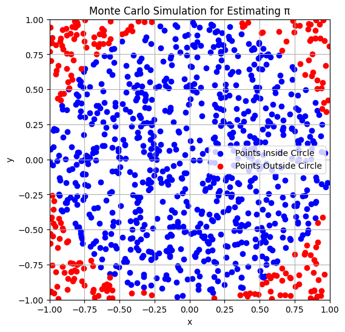

Problem 2
Task 1: Estimating π using Monte Carlo Method - Circle-Based Approach
Explanation:
To estimate \(\pi\) using Monte Carlo simulations, we can take advantage of the geometric properties of a circle inscribed inside a square. The idea is to generate random points within the square and determine how many of those points fall inside the circle.
Consider a unit circle, where the radius \(r = 1\). The circle is inscribed in a square that has side length 2, so the area of the square is \(A_{\text{square}} = 2 \times 2 = 4\), and the area of the circle is \(A_{\text{circle}} = \pi \times r^2 = \pi\).
Geometric Probability:
Let us randomly generate points \((x, y)\) where both \(x\) and \(y\) are uniformly distributed between \(-1\) and \(1\). For a point to be inside the unit circle, the condition is: $$ x^2 + y^2 \leq 1 $$
The ratio of the number of points inside the circle (\(N_{\text{circle}}\)) to the total number of points (\(N_{\text{total}}\)) will approximate the ratio of the area of the circle to the area of the square: $$ \frac{N_{\text{circle}}}{N_{\text{total}}} \approx \frac{A_{\text{circle}}}{A_{\text{square}}} = \frac{\pi}{4} $$
Thus, we can estimate \(\pi\) by rearranging the formula: $$ \pi \approx 4 \cdot \frac{N_{\text{circle}}}{N_{\text{total}}} $$
Steps:
- Generate random points \((x, y)\) in the square with coordinates between \(-1\) and \(1\).
- Check if each point satisfies the condition \(x^2 + y^2 \leq 1\) to determine if it lies inside the circle.
- Calculate the ratio of points inside the circle to the total points and multiply by 4 to estimate \(\pi\).
Formula Summary:
